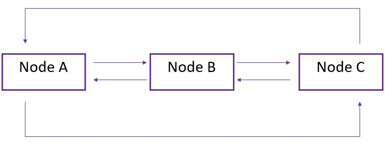
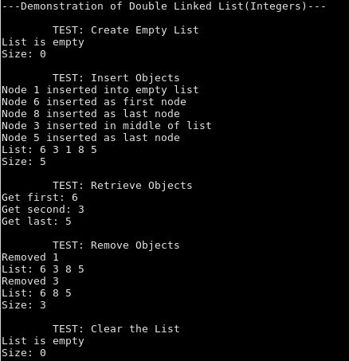
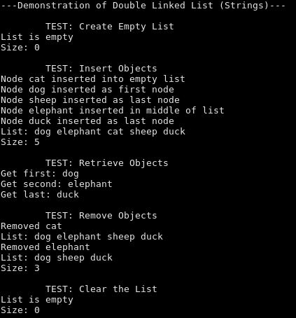

I created a Double Linked List program in C++ for my Data Structures and Algorithms class. This data structure consists of a set of nodes containing data (stored as an Object reference) as well as a pointer to the previous and next nodes.  The data contained in the nodes was stored as an Object reference, allowing anything of type Object to be stored. Users can create a new list, get the size, clear the list, insert a new node, remove a node, get the information in a node at a given position, and print all the nodes. Below is a demonstration of tests for a Double Linked List of integers.  To show the flexibility of the program, a Double Linked List of strings was also tested.  The program I created for the Double Linked List is available to view on Github.